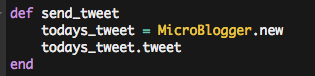

Everyday Build
Accountability reviewer
February 19, 2016
Added a feature where the program offers to let user tweet about their success with their accountability score.
A few weeks ago I wrote a nifty little program to help me track whether I was meeting daily accountability goals. I had a vague idea that I was meeting my daily goals but I was frustrated that I couldn't find an app solution that would basically present me with the same accountability questions every day and record my answers, so that I could check how I was doing over time. So I wrote one instead, and you can check it out here.
The daily checklist reflects on the day so that I can get a feeling of clarity about what I did today, and whether what I did was up to scratch. I built the app with the ability to use the everyday data to create tables and track progress, both overall and with specific elements of the checklist. That, plus the fact that the program exports data into and out of files and tracks it, makes it a pretty nifty little useful thing for me.
Today I added a new feature to this project, which allows the user to tweet about their successes for the day. It was a very simple addition:


I struggled with the program trying to open an authentication page in the browser--something that my setup won't allow me to do, because I'm using Cloud9, a clouded VM--before I realized I could bypass the problem if I assume that I'll always be the user when running this file in my own repo, so I could just save my twitter yml file in the same folder for it to access; it ran beautifully after that.